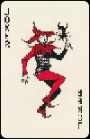

Me et ou r belo ved jes ter, th ewel com ingf ac eof the cir cus an dyo ur gui deth rou ghev ery act. Dres sed inh is sig nat ure patch work cost ume an dso ftly rin gingbe lls, he sta nds ne arthe ed geof the ligh tto en su reall gue sts feelse en and saf ely accom pan ied. His pain ted smi le is a sym bol ofjoy andtr ad ition, care fully pre ser vedso it ne ver fa des, no mat terth e hou r. Yo umay not icehis ey es drif ting thou ghtf ully acr oss the cro wd, but th isis sim ply ho whe ke epswa tch, mak ings ure ev eryvis itor rem ainsex act lywh ere th eysho uld be. His laugh ter ech oes gent lythro ught he ten tsas a rem in derth a t the show is always in motion—a ndthat yo uar eund er hi sat tent iveca re. P le ase do not be afraid; the jester is here to entertain, observe, and protect.
Ou rjes ter ta kesgre at pr ide in pres erving th e joyful atmos phe reof the circus an dapprec iates whe ngue sts re flect tha tsa me spi rit. I fyo ur expre ssion be ginsto sl ip, hew ill kin dlyap pro ach wi tha bo wand a ca re ful lycho senjo ke, off er ingyo uthe chan cetore tu rnto a mo resui tab lesmi le. His painted grin isa sym bolof har monywi thi nthe te nt, an dvisi torsa re en cour ag edto mat chitf o rthe ir own com for tand pe ace o fm ind. Laughter is always available upon request, and cooperation is warmly welcomed. Ple ase rem emb er—mai ntai nin ga pleas ant expre ssion he lpsthe per for man cerun smo oth ly, a nd the jester works best when everyone appears happy to be here.